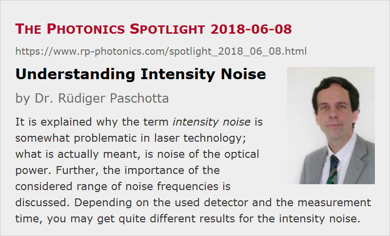

Understanding Intensity Noise
Posted on 2018-06-08 as a part of the Photonics Spotlight (available as e-mail newsletter!)
Permanent link: https://www.rp-photonics.com/spotlight_2018_06_08.html
Author: Dr. Rüdiger Paschotta, RP Photonics Consulting GmbH
Abstract: It is explained why the term intensity noise is somewhat problematic in laser technology; what is actually meant, is noise of the optical power. Further, the importance of the considered range of noise frequencies is discussed. Depending on the used detector and the measurement time, you may get quite different results for the intensity noise.

In the following, I will make various remarks on the issue of intensity noise of lasers – beginning with the question what that actually means.
The Term “Intensity Noise”
Just as phase noise means noise of the optical phase, one should normally expect that intensity noise is noise of the optical intensity (= power per unit area). Curiously, however, the term is usually understood as the noise of the optical power.
In most cases, one specifies relative intensity noise (RIN), meaning noise of the optical power divided by the average power. You may now think that the relative power is just the same as the relative intensity, i.e., of the optical intensity divided by the average intensity. After all, both are dimensionless quantities, and the fluctuation of the intensity by 1%, for example, should be associated with an increase of power by the same amount. However, that is true only if the shape of the transverse beam profile stays constant – but is that the case? For the output beam of a single transverse mode laser, that condition is indeed usually quite well fulfilled, but for lasers with multimode operation it is usually not: when observing the output beam profile with a sufficiently fast camera, you would see that the detailed shape of the output beam fluctuates a lot.
You actually don't need a fast camera to observe that. Instead, you could do the following investigation on the output beam of a laser:
- First try to image the whole output beam (with appropriate attenuation of course) in the active area of your photodetector (e.g., a fast photodiode) and measure the noise, i.e., the fluctuations of the obtained photocurrent.
- Then do the same measurement, but instead of the imaging, just put the detector somewhere into the beam, so that it sees only a small part of it.
If you do that with a diode bar, for example, you will presumably find a much higher relative noise level in the latter experiment, while with a single-mode diode laser that would not be the case. The diode bar exhibits substantial fluctuations of the local intensity, but if you take the whole output power, much of those fluctuations are averaged out, so that the total output power fluctuates relatively less. This phenomenon is related to fluctuations of output power in the many different modes of the laser resonator: while the power in each mode may fluctuate substantially, the overall power fluctuates much less. In addition, there is actually the issue of mode beating, but that alone would only cause noise at rather high frequencies.
In conclusion, you can see that the relative noise of the optical intensity can be far stronger then the relative intensity noise as usually understood – which is actually the noise of the relative power.
Role of the Considered Noise Frequencies
In practice, one often encounters quite meaningless noise specifications. For example, you can find data sheets of lasers promising that the relative intensity noise will be below 0.1% (without further details). That may look reasonable at first glance, but does not survive a closer inspection.
The main issue is that it depends on the bandwidth of your measurement how much noise you will see:
- A slow detector cannot see fast fluctuations and may therefore report much less noise than a faster detector.
- A second issue is the measurement time. If you do a measurement over a short interval of time, you have no chance to see slow drifts of the measured quantity. You may take the average value of the measured quantity over your measurement time interval, but that will generally not be identical to the actual average value which you see for longer observation times. The measurement time is inversely related to the minimum frequency where you can see noise. That issue is particularly important in cases where the power spectral density of the observed quantity diverges at zero noise frequency. That is often the case for phase noise, but not for power (intensity) noise – essentially, because the output power of the laser can fluctuate only within certain bounds.
Essentially, one can measure the power spectral density of the noise in some range of noise frequencies, limited by the speed of our detector and by our patience (i.e., the measurement time). The obtained variance of the measured quantity is the integral of that power spectral density over the mentioned range of noise frequencies. Obviously, that variance can become larger if you expand that frequency range – particularly if the power spectral density substantial around the frequency limits.

In case of solid-state lasers, we often have substantial intensity noise around the relaxation oscillation frequency (see Figure 1). It is thus essential whether the measurement bandwidth is below or above that frequency: you see much more noise if the relaxation oscillations are included. On the other hand, in our example case you would not see much difference between a measurement bandwidth of 200 kHz or 300 kHz, because the noise at those high frequencies is anyway quite weak. (Note the logarithmic vertical scale!)
How Should We Specify Relative Intensity Noise?
Ideally, you would measure the power spectral density of the noise and specify either the typical value of that or some upper limit, which the laser will surely not exceed. A competent reader could then calculate in detail how the intensity noise would affect an intended application.
However, such comprehensive specifications are often not given for lasers. Instead, there is often only an r.m.s. noise value, which is essentially the square root of the noise variance, i.e., the square root of the above-mentioned integral over the power spectral density. One should then at least specify the range of noise frequencies considered in the measurement, because otherwise the r.m.s. value is quite meaningless as explained above.
By the way, if you have an r.m.s. value of 0.1%, for example, don't expect that the laser power will always stay within 0.1% of its average value! It will quite often leave that range; only, the square root of the average of the squared relative power deviations will be 0.1%.
This article is a posting of the Photonics Spotlight, authored by Dr. Rüdiger Paschotta. You may link to this page and cite it, because its location is permanent. See also the RP Photonics Encyclopedia.
Note that you can also receive the articles in the form of a newsletter or with an RSS feed.
Questions and Comments from Users
Here you can submit questions and comments. As far as they get accepted by the author, they will appear above this paragraph together with the author’s answer. The author will decide on acceptance based on certain criteria. Essentially, the issue must be of sufficiently broad interest.
Please do not enter personal data here; we would otherwise delete it soon. (See also our privacy declaration.) If you wish to receive personal feedback or consultancy from the author, please contact him e.g. via e-mail.
By submitting the information, you give your consent to the potential publication of your inputs on our website according to our rules. (If you later retract your consent, we will delete those inputs.) As your inputs are first reviewed by the author, they may be published with some delay.
|  |
If you like this page, please share the link with your friends and colleagues, e.g. via social media:
These sharing buttons are implemented in a privacy-friendly way!